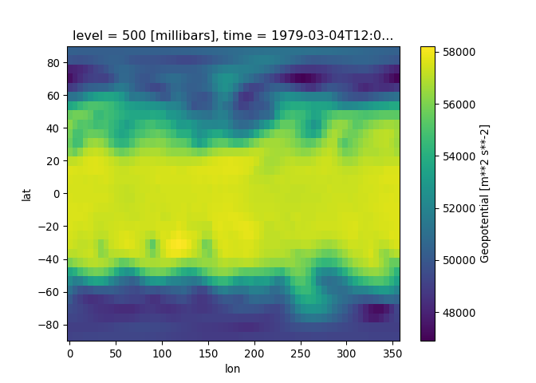
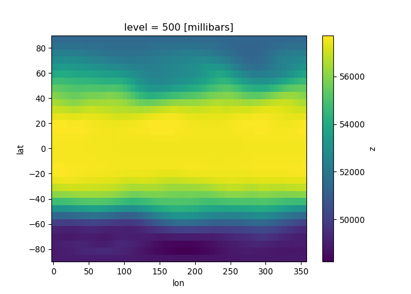
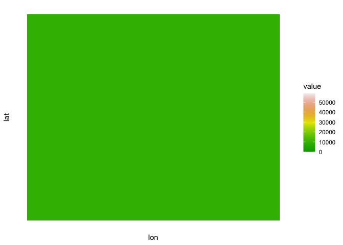

WeatherBench
Ty Tuff, ESIIL Data Scientist 2023-05-21
WeatherBench is a valuable resource housed on GitHub, aimed at fostering the development and evaluation of machine learning models in the field of weather prediction. Developed by Pangeo Data, a community-driven and open-source project focused on data-intensive earth science, WeatherBench seeks to address the current gap in benchmark datasets specifically designed for weather forecasting.
The WeatherBench repository is centered around a comprehensive dataset derived from the ERA5 reanalysis data provided by the European Centre for Medium-Range Weather Forecasts (ECMWF). This data spans several decades and includes a variety of key atmospheric variables, such as temperature, pressure, and precipitation, among others. The high spatial and temporal resolution of the data makes it an excellent resource for developing and testing weather prediction models.
A unique feature of WeatherBench is that it is not just a dataset, but a comprehensive benchmarking system. It includes a scoring function to evaluate predictions, following the common practices in weather forecasting. This allows for a standardized evaluation of models, ensuring that different methods can be fairly and directly compared.
Moreover, the repository includes example code using state-of-the-art machine learning techniques for weather forecasting. This provides a helpful starting point for those new to the field or looking to compare their own approaches with established methods.
In summary, WeatherBench represents a significant contribution to the meteorological and machine learning communities by providing a robust, standardized platform for the development and comparison of weather forecasting models. Whether you are a researcher, data scientist, meteorologist, or student, WeatherBench offers a rich resource to explore and contribute to this exciting intersection of disciplines.
import xarray as xr
import matplotlib.pyplot as plt
wget "https://dataserv.ub.tum.de/s/m1524895/download?path=%2F5.625deg%2Fgeopotential_500&files=geopotential_500_5.625deg.zip" -O geopotential_500_5.625deg.zip --no-check-certificate
mkdir -p geopotential_500
unzip -d geopotential_500/ geopotential_500_5.625deg.zip
z500 = xr.open_mfdataset('geopotential_500/*.nc', combine='by_coords')
z500
<xarray.Dataset>
Dimensions: (lon: 64, lat: 32, time: 350640)
Coordinates:
level int32 500
* lon (lon) float64 0.0 5.625 11.25 16.88 ... 337.5 343.1 348.8 354.4
* lat (lat) float64 -87.19 -81.56 -75.94 -70.31 ... 75.94 81.56 87.19
* time (time) datetime64[ns] 1979-01-01 ... 2018-12-31T23:00:00
Data variables:
z (time, lat, lon) float32 dask.array<chunksize=(8760, 32, 64), meta=np.ndarray>
Attributes:
Conventions: CF-1.6
history: 2019-11-10 20:33:23 GMT by grib_to_netcdf-2.14.0: /opt/ecmw...
plt.clf()
# Plot an example
z500.z.isel(time=1500).plot();
plt.show()

plt.clf()
# To speed things up we will just take the mean for 2016
climatology = z500.sel(time=slice('2016', '2018')).mean('time').load()
climatology.z.plot()
plt.show()

library(RCurl)
library(ncdf4)
library(ggplot2)
library(reshape2)
library(tidync)
# Set options to skip SSL verification
download_opts <- list(ssl.verifypeer = FALSE, ssl.verifyhost = FALSE)
# Download the dataset
bin_data <- getBinaryURL("https://dataserv.ub.tum.de/s/m1524895/download?path=%2F5.625deg%2Fgeopotential_500&files=geopotential_500_5.625deg.zip", .opts = download_opts)
# Write the downloaded data to a file
writeBin(bin_data, "geopotential_500_5.625deg.zip")
# Unzip the downloaded file
unzip("geopotential_500_5.625deg.zip", exdir = "geopotential_500/")
# Load multiple NetCDF files into R
filenames <- list.files(path = "geopotential_500", full.names = TRUE, pattern = "*.nc")
# Use tidync to read the first NetCDF file
z500_first <- tidync(filenames[[1]]) %>% hyper_tibble()
# Melt the data frame to make it compatible with ggplot2
z500_melt <- melt(z500_first, id.vars = c("lon", "lat"))
ggplot(z500_melt, aes(lon, lat, fill = value)) +
geom_tile() +
scale_fill_gradientn(colors = terrain.colors(1000)) +
theme_minimal() +
theme(axis.text = element_blank(),
axis.ticks = element_blank(),
panel.grid = element_blank())
